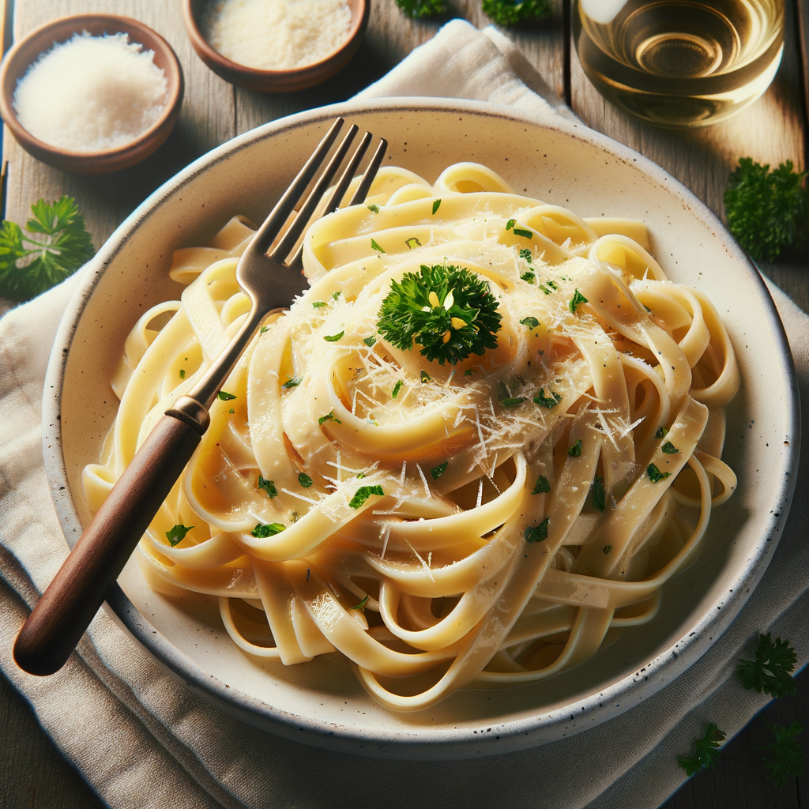
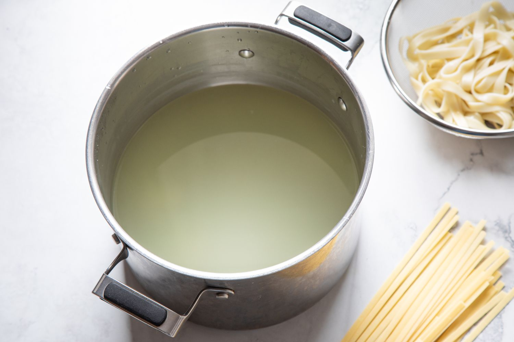

Chicken Alfredo
This is a classic chicken alfredo recipie that is simple to make and delicious.

For this recipie you will need...
- Pasta
- Chicken Breast
- Blackened Spice
- Parmigiano Reggiano
- Butter
- Heavy Cream
- Pasta Water

- Bring a large pot of salted water to boil.
Also, finely mince 3 cloves of garlic and grate 1 1/4 cups of Parmigiano Reggiano cheese, and set it aside.
- Butterfly 1 pound of chicken breasts and flatten the pieces to about 3/8 to 1/2″ thick.
- Season the flattened chicken with blackened seasoning on both sides.
- Heat a stainless steel pan to medium heat. Once the pan gets hot add a touch of olive oil and lay down the chicken to sear
- Using a new clean pan, heat 7 tablespoons of butter and the garlic over medium-low heat.
- Once the garlic turns golden add in 1 1/4 cups of heavy cream and the Parmigiano Reggiano cheese. Stir the sauce and bring to a simmer.
- Cook the pasta while simmering the sauce.
- The sauce will thicken and begin to bubble. Once it does you can turn the heat down to low. When the pasta is al dente, drain it well and add it to the alfredo sauce.
- Toss and enjoy!
This is one of my favorite recipies because it's simple yet very expressive.
There is a lot of different ways to change or alter your alfredo to make it yours.
And most importantly, it tastes amazing!
Alfredo Printed Recipie